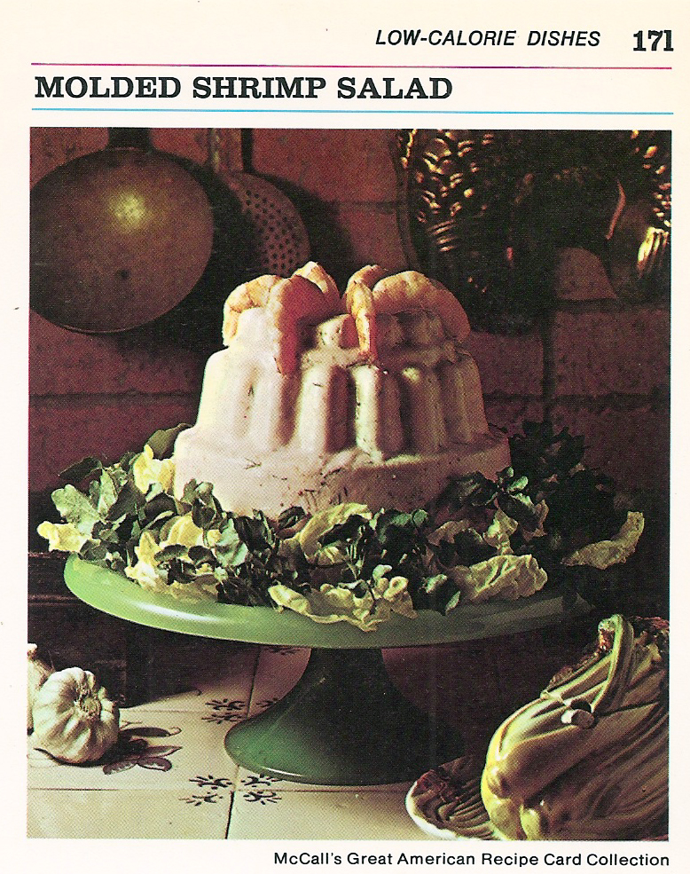

Molded Shrimp Salad

Creamy, tangy, and oh-so-divine
If you love mayo and jelly together, you'll love this one. Who are we kidding- everyone and their mom will be begging for this recipe.
Ingredients
Makes 8 servings
- 2 envelopes unflavored gelatine
- 1 1/2 cups skim-milk yogurt
- 1 cup low-calorie mayo
- 1/2 cup chili sauce
- 2 tablespoons lemon juice
- 2 tablespoons finely chopped green onion
- 1 teaspoon salt
- 1/4 teaspoon dried tarragon leaves
- 2 lb shelled de-veined shrimp, cooked
- 1/2 cup chopped celery
- lettuce
Steps
- Sprinkle gelatine over 1 1/2 cups cold water in medium saucepan; let soften about 5 minutes. Bring to boil, stirring until gelative is dissolved.
- Set pan in bowl of ice cubes until gelatine is cold; stir once or twice.
- Add yogurt, mayo, chili sauce, lemon juice, onion, salt, and tarragon to gelatine; mix until well blended. Refrigerate or place over ice, stirring occasionally, until mixture is consistency of unbeaten egg whites.
- Set aside and refrigerate 8 shrimp for garnish. Cut remaining shrimp in 1/4 inch pieces. Add chopped shrimp and celery to yogurt mixture; mix well. Turn into chilled, 2-quart mold or 8 individual molds.
- Refrigerate until set- about 6 hours or overnight.
- To unmold: Run a small spatula around the edge of the mold, then dip the mold in warm water for a few seconds. Place onto a bed of lettuce and garnish edge with shrimp.
Main